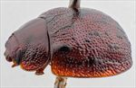
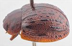
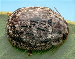
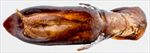
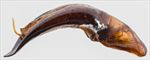
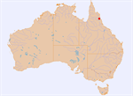

Click on images to enlarge
![Male, Mt. Carbine, North Queensland [QM]](assets/image/Ta240/Ta240_AGM-096_SM.jpg){kind=link}

Male, Mt. Carbine, North Queensland [QM]
_SM.jpg){kind=link}

Female, Einasleigh, North Queensland
{kind=link}

Female, Einasleigh, North Queensland
![Aedeagus, dorsal view [Mt. Carbine, North Queensland]](assets/image/Ta240/Ta240_AdGM-096a_SM.jpg){kind=link}

Aedeagus, dorsal view [Mt. Carbine, North Queensland]
![Aedeagus, lateral view [Mt. Carbine, North Queensland]](assets/image/Ta240/Ta240_AdGM-096b_SM.jpg){kind=link}

Aedeagus, lateral view [Mt. Carbine, North Queensland]
{kind=link}

Distribution
Name
Trachymela sp. Ta240
Reference specimen
GM-096, Mt. Carbine, North Queensland [QM]
Adult Description
Length: ♀ 7.8-8.6 mm [6], ♂ 7.2-7.4 mm [3].
Colour: head: frons and clypeus uniformly mid-brown, fronto-clypeal suture sometimes darker at its lateral extremes, labrum yellow-brown, mandibles brown with black tips; antennae segments A1-A7 uniformly pale brown, A8-A11 with distal half slightly-darker; pronotum: brown, disc and foveal areas fractionally darker than head, with lateral marginal areas slightly paler, a small, black or dark brown approximately round mark is present on each side centred just behind inside edge of eye and slightly in front of centre, another black round mark, similar in size, is present in middle of foveal area; scutellum: brown, slightly darker than pronotal disc; elytra: brown, same shade as pronotum, with marginal area similar in shade, elytral disc with several longitudinal rows (most prominently, VR3 and VR5) of black tubercles, many in the form of short longitudinal weals with the basal section of VR3 prominently longer than any others, these black verrucae are mostly asynchronous between rows over the anterior half of disc, but line up very roughly in one or two two transverse rows in the apical half, some specimens with posterior third of VR8 in the form of sharply-defined, thin and often longitudinally extended black verrucae; punctures of same shade as interstices, humeral callus black, the black area extending anteriorly to almost reach base of elytron; venter: orange-brown, sometimes with lateral parts of thoracic ventrites a little darker, legs almost uniformly orange-brown, epipleura light-brown. Cuticular wax: grey, quite unevenly distributed over whole of dorsal surface with some broad longitudinal streaks of denser wax on elytral disc and margin, wax also denser in post-basal depression and along basal margin of elytra and lateral margin of pronotum.
Shape: almost uniformly and very lightly curved for anterior 75% of length, where curvature increases noticeably, moderately high, elytral summit a little in front of middle of elytral margin; Head; puncture size moderate (pd~2-3xef) with some scattered, much smaller, punctures also present, quite evenly and densely distributed. Antennae relatively long (AL ♂=44%BL, ♀=?%BL), filiform. Pronotum; almost evenly curved transversely over discal area, with foveal depression absent and much of foveal area very slightly elevated, puncturation on disc clearly impressed, similar in size as on head with much finer punctured scattered among the larger, somewhat unevenly distributed and dense in discal area, sometimes more clearly impressed and evenly distributed along anterior and posterior margins, interstices in discal area smooth, never obscuring punctures, punctures becoming much coarser towards margin. Front margins join lateral margins in a smoothly rounded right-angle, with lateral margin usually straight for almost half distance before curving smoothly and gradually towards rear margin. Scutellum; surface smooth, unpunctured to very sparsely and finely punctured. Elytra; surface evenly curved transversely throughout disc with margins sometimes noticeably explanate, punctures moderately large and relatively evenly distributed over disc, considerably larger in marginal area, 3 or 4 longitudinal series of verrucae, round or often considerably extended laterally, rarely with a very fine central puncture, are present on disc, these being VR2, VR3, VR5 and more rarely, VR7, VR3 is usually in the form of a continuous ridge from anterior margin of elytron to antero-median depression, verrucae from other rows may be present, but these are more often small and inconspicuous, see “colour” above for distribution of verrucae, elytral suture carinate in posterior third, lateral margin almost straight or very slightly ascending in anterior quarter, surface continuous or very slightly discontinuous under humeral callus. Vertical extension of epipleura considerable (HCE/PW=0.38). Venter; Prosternal process broad and almost parallel-sided throughout its length, open anteriorly, a sparse scatter of short setae on prosternal process and mesosternum, a single seta on anterior and median trochanter; front edge of metasternum beveled, truncate; inner edge of posterior of epipleurae lacking setae, or, if present, usually quite short and thinly scattered. Aedeagus; moderate-sized (LPE=33.9%BL), in dorsal view, sides almost parallel, or very slightly narrowed near middle, from basal sulcus to about middle of ostial opening from where the sides converge towards apex very gradually and initially uniformly and relatively smoothly, apex a broad triangle without a projecting tip, spatula large, dorsal surface with short dorso-median channel that terminates in a membranous depression behind ostium, dorsolateral channels well defined, ostial flaps with oblique anterior edges that produce a triangular indent in posterior edge of ostium, ostial opening large, about as long as broad; in lateral view, ventral surface curved almost evenly from basal sulcus to posterior of spatula from where the curvature increases very slighly before deflexed apical half of spatula, dorsal surface converges with ventral surface from near posterior of ostium, flagellum thins rapidly from where it exits ostial opening.
Larvae
unknown.
Eggs
unknown.
Similar species
Ta147 - this species has a very similar body shape and arrangement of verrucae, but differs in its larger size and the possession of a prominent row of setae on the inner surface of the epipleurae near the elytral apex. The adeagi of the two species are quite similar in shape, but that of Ta147 is much wider.
Notes
The brown bloodwood, Corymbia clarksoniana, is the only host record known for Ta240.
Copyright © 2026. All rights reserved.